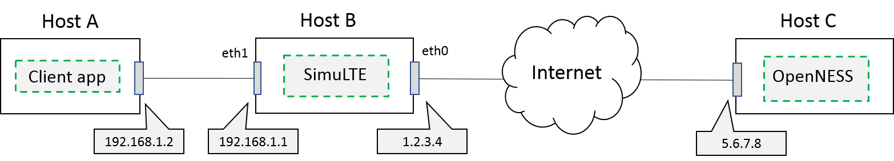
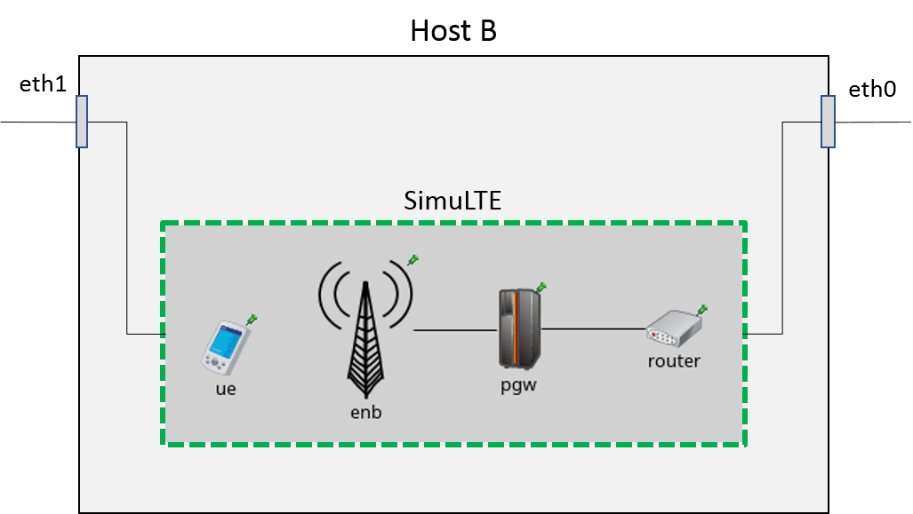

Running SimuLTE as a network emulator
In this section, the guidelines for running SimuLTE as a network emulator are described.
Running SimuLTE as a network emulator means that the simulation must run in real time and must be able to communicate with the real world, i.e. capturing/injecting packets from/to real networks. This is especially useful for integrating SimuLTE with external real-world applications and frameworks. For example, it allows one to make SimuLTE interoperable with the Intel OpenNESS framework.
OpenNESS is an open source framework that allows to run application on a real Mobile Edge Computing environment. More information on the OpenNESS website.
In the following, we refer to the simple architecture depicted in the figure: 
The main components of the above architecture are:
- Host A, which acts as a client and requests a service from the OpenNESS server, e.g. the client for a video-streaming application.
- Host B, which emulates the LTE network by running an instance of SimuLTE in real-time mode
- Host C, which runs an instance of OpenNESS and acts as a server, e.g. the server-side of a video-streaming application
We assume that Host B is connected to Host C and Host A through its eth0 and eth1 interface, respectively, and IP addresses are configured as shown in the figure. Moreover, we assume that Host B's eth0 has a public IP address (1.2.3.4 in this example), visible from the Internet. On the other hand, Host A is connected to Host B by means of a local private network (having IP address 192.168.1.0/24).
Regarding the emulated network scenario, we refer to the "EmulatedNetwork" example, included into the file "simulations/emulation/EmulatedNetwork.ned" and shown in the figure below. 
The router and the UE are endowed with an ExtInterface module, which is capable to capture real packets received by a given real network interface card. This way, data packets coming from Host C are received on the eth0 interface and injected into the "router" element of the running instance of SimuLTE. From there, data are forwarded through the emulated LTE network towards the UE. When data packets reach the UE, they are sent out to Host A. Vice versa, packets coming from Host A are recived on the eth1 interface and injected into the "ue" element of the running instance of SimuLTE and forwarded to the "router", which sends them out to Host C.
Install and configure OpenNESS
Please refer to the official OpenNESS documentation.
Setting the environment
In order to setup the above scenario, the following steps are required to configure the OS on Host B (the one running SimuLTE).
NOTE:The following instructions refer to a host equipped with Linux Ubuntu 16.04 OS.
Configure the network
Since the network between Host A and Host B is private, we need to configure the Host B's OS so that it can reroute packets from Host A to the Internet.
- Enable IP forwarding on Host B, by running "sudo gedit /etc/sysctl.conf" from the terminal. Look for the ip_forward parameter and edit it as follows:
net.ipv4.ip_forward=1 - From the terminal, add NAT (Network Address Translation) rule:
sudo iptables -t nat -A POSTROUTING -s 192.168.1.0/24 -o eth0 -j MASQUERADE sudo iptables-save sudo iptables -L - Add IP route for packets destined to Host A:
sudo route add -net 192.168.1.0 netmask 255.255.255.0 eth1
Configure the OS firewall
Since packets captured by the simulation are copied rather than redirected to the SimuLTE process, we need to prevent original data packets to follow the "legacy" path, i.e. the path that does not go through SimuLTE. This is accomplished by configuring the OS firewall accordingly.
- Run sudo gedit /etc/ufw/before.rules and edit the file as follows:
# block traffic to 5.6.7.8 (TCP port 5678) on eth1 # IP address of the server -A ufw-before-forward -i eth1 -d 5.6.7.8 -p tcp --dport 5678 -j DROP # block traffic from 5.6.7.8 (TCP port 5678) on eth0 -A ufw-before-forward -i eth0 -s 5.6.7.8 -p tcp --sport 5678 -j DROP - Reload firewall, by running sudo ufw reload
Download and install the SimuLTE code
- Clone the "emulation" branch from the GitHub repository.
- Import the project to the OMNeT++ IDE and build it. Instructions are available here.
NOTE: This version of SimuLTE is compatible with OMNeT++ 5.5.1 and INET 3.6.6. It is not compatible with INET 4.x.
Configure the simulation
The simulations/emulation folder includes an exemplary omnetpp.ini file. You can use it as a starting point for your own configuration.
- In the omnetpp.ini file, set the UE's 'extHostAddress' parameter to the IP address of the eth0 interface
*.ue.extHostAddress = "1.2.3.4" - Configure the routing tables of all the network devices in the simulated network. To do so, edit the .mrt files included in the folder 'routing'. Edit them so as to enable a path from the router to the UE. In the omnetpp.ini file, set the 'routingTable.routingFiles' parameters to the path of the .mrt files.
- In the omnetpp.ini file, set the 'device' and 'filterString' parameters for both the router and the UE. The 'device' parameter is the name of the interface which you want to capture the packets from (i.e. eth0 and eth1, respectively). The 'filterString' parameter is the filter expression specifying which packets need to be captured and injected into the simulation.
Run an emulation example
- In your terminal, navigate to the "simulations/emulation" folder
- Run the simulation with root privileges. This is needed for running the simulation in real time mode.